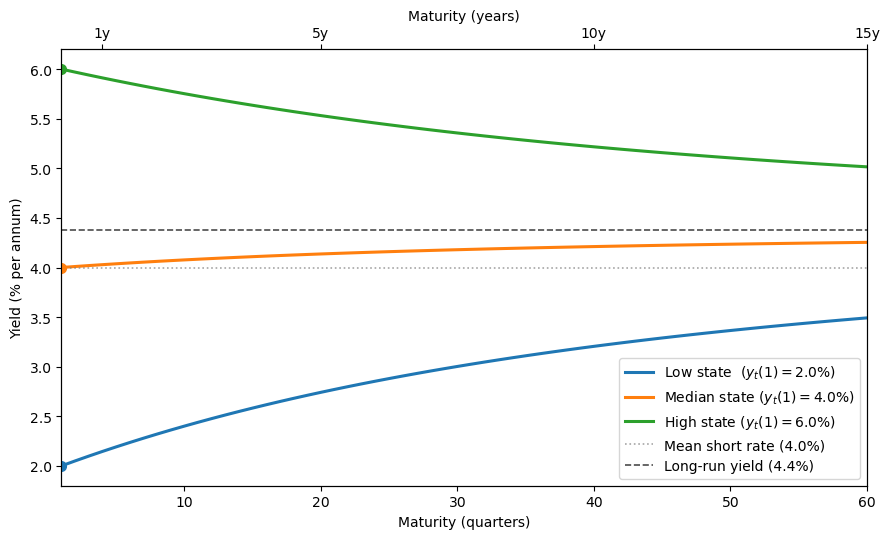
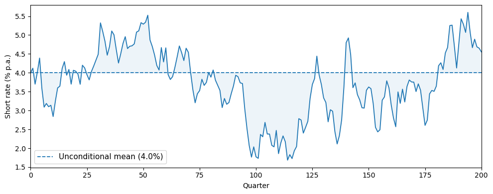
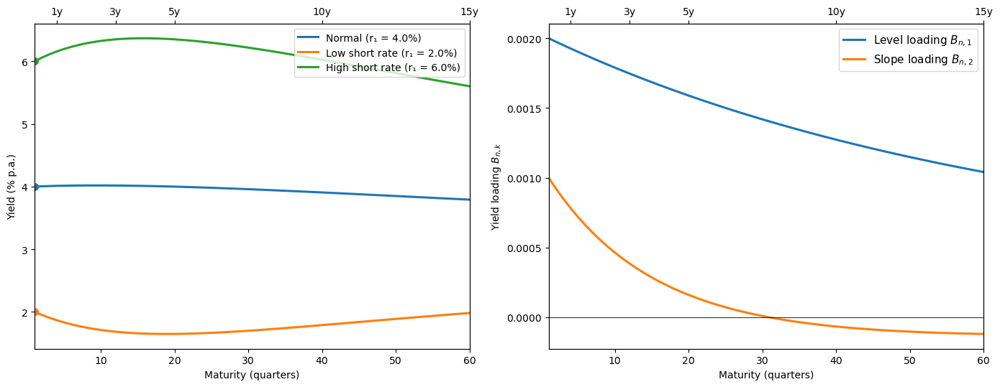
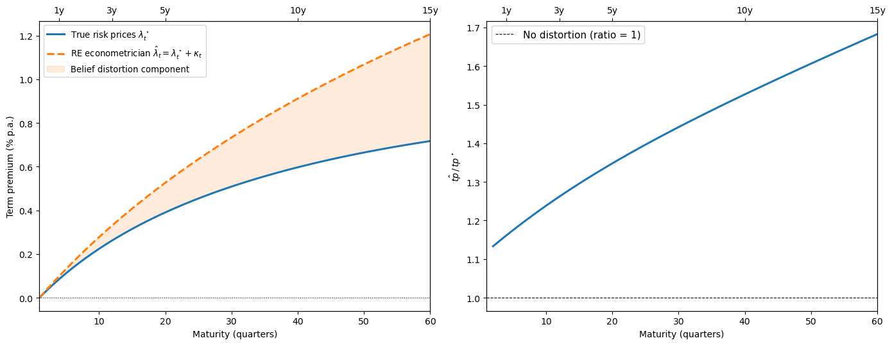

99. Affine Models of Asset Prices#
99.1. Overview#
This lecture describes a class of affine or exponential quadratic models of the stochastic discount factor that have become widely used in empirical finance.
These models are presented in chapter 15 of Ljungqvist and Sargent [2018].
The models discussed here take a different approach from the time-separable CRRA stochastic discount factor of Hansen and Singleton [1983], studied in our companion lecture.
The CRRA stochastic discount factor is
where \(r_t = \rho + \gamma\mu - \frac{1}{2}\sigma_c^2\gamma^2\).
This model asserts that exposure to the random part of aggregate consumption growth, \(\sigma_c\varepsilon_{t+1}\), is the only priced risk, the sole source of discrepancies among expected returns across assets.
Empirical difficulties with this specification (the equity premium puzzle, the risk-free rate puzzle, and the Hansen-Jagannathan bounds discussed in Doubts or Variability?) motivate the alternative approach described in this lecture.
Put bluntly, the model to be studied in this lecture declares the Lucas asset pricing model’s stochastic discount factor to be a failure.
The affine model maintains \(\mathbb{E}(m_{t+1}R_{j,t+1}) = 1\) but divorces the stochastic discount factor from consumption risk, and consequently, from much of macroeconomics too.
Instead, it
specifies an analytically tractable stochastic process for \(m_{t+1}\), and
uses overidentifying restrictions from \(\mathbb{E}(m_{t+1}R_{j,t+1}) = 1\) applied to \(N\) assets to let the data reveal risks and their prices.
Note
Researchers including [Bansal and Yaron, 2004] and [Hansen et al., 2008] have been less willing to give up on consumption-based models of the stochastic discount factor.
Key applications we study include:
Pricing risky assets: how risk prices and exposures determine excess returns.
Affine term structure models: bond yields as affine functions of a state vector (Ang and Piazzesi [2003]).
Risk-neutral probabilities: a change-of-measure representation of the pricing equation.
Distorted beliefs: reinterpreting risk price estimates when agents hold systematically biased forecasts (Piazzesi et al. [2015]); see also Risk Aversion or Mistaken Beliefs?.
We start with the following imports:
import numpy as np
import matplotlib.pyplot as plt
from collections import namedtuple
from numpy.linalg import eigvals
Matplotlib is building the font cache; this may take a moment.
99.2. The model#
99.2.1. State dynamics and short rate#
The model has two components.
Component 1 is a vector autoregression that describes the state of the economy and the evolution of the short rate:
Here
\(\phi\) is a stable \(m \times m\) matrix,
\(C\) is an \(m \times m\) matrix,
\(\varepsilon_{t+1} \sim \mathcal{N}(0, I)\) is an i.i.d. \(m \times 1\) random vector,
\(z_t\) is an \(m \times 1\) state vector.
Equation (99.2) says that the short rate \(r_t\), the net yield on a one-period risk-free claim, is an affine function of the state \(z_t\).
Component 2 is a vector of risk prices \(\lambda_t\) and an associated stochastic discount factor \(m_{t+1}\):
Here \(\lambda_0\) is \(m \times 1\) and \(\lambda_z\) is \(m \times m\).
The entries of \(\lambda_t\) that multiply corresponding entries of the risks \(\varepsilon_{t+1}\) are called risk prices because they determine how exposures to each risk component affect expected returns (as we show below).
Because \(\lambda_t\) is affine in \(z_t\), the stochastic discount factor \(m_{t+1}\) is exponential quadratic in the state \(z_t\).
We implement the model components as follows.
AffineModel = namedtuple('AffineModel',
('μ', 'φ', 'C', 'δ_0', 'δ_1', 'λ_0', 'λ_z', 'm', 'φ_rn', 'μ_rn'))
def create_affine_model(μ, φ, C, δ_0, δ_1, λ_0, λ_z):
"""Create an affine term structure model."""
μ = np.asarray(μ, float)
φ = np.asarray(φ, float)
C = np.asarray(C, float)
δ_1 = np.asarray(δ_1, float)
λ_0, λ_z = np.asarray(λ_0, float), np.asarray(λ_z, float)
return AffineModel(μ=μ, φ=φ, C=C, δ_0=float(δ_0), δ_1=δ_1,
λ_0=λ_0, λ_z=λ_z, m=len(μ),
φ_rn=φ - C @ λ_z, μ_rn=μ - C @ λ_0)
def simulate(model, z0, T, rng=None):
"""Simulate z_{t+1} = μ + φ z_t + C ε_{t+1} for T periods."""
if rng is None:
rng = np.random.default_rng(42)
Z = np.zeros((T + 1, model.m))
Z[0] = z0
for t in range(T):
ε = rng.standard_normal(model.m)
Z[t + 1] = model.μ + model.φ @ Z[t] + model.C @ ε
return Z
def short_rate(model, z):
"""Compute r_t = δ_0 + δ_1^⊤ z_t."""
return model.δ_0 + model.δ_1 @ z
def risk_prices(model, z):
"""Compute λ_t = λ_0 + λ_z z_t."""
return model.λ_0 + model.λ_z @ z
99.2.2. Properties of the SDF#
Since \(\lambda_t^\top\varepsilon_{t+1}\) is conditionally normal, it follows that
and
Exercise 99.1
Show that the SDF defined in (99.4) satisfies
and
where \(\| \lambda_t \| = \sqrt{\lambda_t^\top\lambda_t}\) denotes the Euclidean norm of the risk price vector.
For the second result, use the lognormal variance formula and the approximations \(\exp(x) \approx 1 + x\) and \(\exp(-r_t) \approx 1\) for small \(x\) and \(r_t\).
Solution
From (99.4), we have
Since \(-\lambda_t^\top \varepsilon_{t+1} \sim \mathcal{N}(0, \lambda_t^\top \lambda_t)\), we have \(\mathbb{E}_t[\exp(-\lambda_t^\top \varepsilon_{t+1})] = \exp\left(\frac{1}{2}\lambda_t^\top \lambda_t\right)\).
Therefore,
\(m_{t+1}\) is conditionally lognormal with \(\log m_{t+1} \sim \mathcal{N}(-r_t-\frac{1}{2}\lambda_t^\top\lambda_t, \lambda_t^\top \lambda_t)\).
By the lognormal variance formula \(\text{Var}(\exp(X)) = (\exp(\sigma^2) - 1) \exp(2\mu + \sigma^2)\) for \(X \sim \mathcal{N}(\mu, \sigma^2)\), we have
by the approximation \(\exp(x) \approx 1 + x\) for small \(x\).
Hence,
With \(\exp(-r_t) \approx 1\) for small \(r_t\), we obtain
The first equation confirms that \(r_t\) is the net yield on a risk-free one-period bond.
That is why \(r_t\) is called the short rate in the exponential quadratic literature.
The second equation says that the conditional standard deviation of the SDF is approximately the magnitude of the vector of risk prices, a measure of overall market price of risk.
99.3. Pricing risky assets#
99.3.1. Lognormal returns#
Consider a risky asset \(j\) whose gross return has a lognormal conditional distribution:
where the exposure vector
Here \(\alpha_0(j)\) is \(m \times 1\) and \(\alpha_z(j)\) is \(m \times m\).
The components of \(\alpha_t(j)\) express the exposures of \(\log R_{j,t+1}\) to corresponding components of the risk vector \(\varepsilon_{t+1}\).
The specification (99.5) implies \(\mathbb{E}_t R_{j,t+1} = \exp(\nu_t(j))\), so \(\nu_t(j)\) is the log of the expected gross return.
99.3.2. Expected excess returns#
Applying the pricing equation \(\mathbb{E}_t(m_{t+1}R_{j,t+1}) = 1\) together with the formula for the mean of a lognormal random variable gives
Exercise 99.2
Using the SDF (99.4) and the return specification (99.5), derive the expected excess return formula (99.7):
Hint: Start by computing \(\log(m_{t+1} R_{j,t+1})\), identify its conditional distribution, and apply the pricing condition \(\mathbb{E}_t(m_{t+1}R_{j,t+1}) = 1\).
Solution
Combining (99.4) and (99.5), we get
This is conditionally normal with mean \(\mu = -r_t + \nu_t(j) - \frac{1}{2}\lambda_t^\top\lambda_t - \frac{1}{2}\alpha_t(j)^\top\alpha_t(j)\) and variance \(\sigma^2 = (\alpha_t(j) - \lambda_t)^\top(\alpha_t(j) - \lambda_t)\).
Since \(\mathbb{E}_t[\exp(X)] = \exp(\mu + \frac{1}{2}\sigma^2)\) for \(X \sim \mathcal{N}(\mu, \sigma^2)\), the pricing condition \(\mathbb{E}_t(m_{t+1}R_{j,t+1}) = 1\) requires \(\mu + \frac{1}{2}\sigma^2 = 0\).
Expanding \(\frac{1}{2}\sigma^2 = \frac{1}{2}\alpha_t(j)^\top\alpha_t(j) - \alpha_t(j)^\top\lambda_t + \frac{1}{2}\lambda_t^\top\lambda_t\) and adding to \(\mu\), the \(\frac{1}{2}\lambda_t^\top\lambda_t\) and \(\frac{1}{2}\alpha_t(j)^\top\alpha_t(j)\) terms cancel, leaving
which gives (99.7).
This is a central result.
It says:
The log expected gross return on asset \(j\) equals the short rate plus the inner product of the asset’s exposure vector \(\alpha_t(j)\) with the risk price vector \(\lambda_t\).
Each component of \(\lambda_t\) prices the corresponding component of \(\varepsilon_{t+1}\).
An asset that loads heavily on a risk component with a large risk price earns a correspondingly high expected return.
99.4. Affine term structure of yields#
One of the most important applications is the affine term structure model studied by Ang and Piazzesi [2003].
99.4.1. Bond prices#
Let \(p_t(n)\) be the price at time \(t\) of a risk-free pure discount bond maturing at \(t + n\) (paying one unit of consumption).
The one-period gross return on holding an \((n+1)\)-period bond from \(t\) to \(t+1\) is
The pricing equation \(\mathbb{E}_t(m_{t+1}R_{t+1}) = 1\) implies
with the initial condition
99.4.2. Exponential affine prices#
The recursion (99.8) has an exponential affine solution:
where the scalar \(\bar A_n\) and the \(m \times 1\) vector \(\bar B_n\) satisfy the Riccati difference equations
with initial conditions \(\bar A_1 = -\delta_0\) and \(\bar B_1 = -\delta_1\).
Exercise 99.3
Derive the Riccati difference equations (99.10) and (99.11) by substituting the conjectured bond price (99.9) into the pricing recursion (99.8) and matching coefficients.
Hint: Substitute \(p_{t+1}(n) = \exp(\bar A_n + \bar B_n^\top z_{t+1})\) and \(\log m_{t+1}\) from (99.4) into (99.8).
Use the state dynamics (99.1) to express \(z_{t+1}\) in terms of \(z_t\) and \(\varepsilon_{t+1}\), then evaluate the conditional expectation using the lognormal moment generating function.
Solution
We want to show that if \(p_t(n) = \exp(\bar A_n + \bar B_n^\top z_t)\), then the recursion \(p_t(n+1) = \mathbb{E}_t(m_{t+1}\, p_{t+1}(n))\) yields \(p_t(n+1) = \exp(\bar A_{n+1} + \bar B_{n+1}^\top z_t)\) with \(\bar A_{n+1}\) and \(\bar B_{n+1}\) given by (99.10) and (99.11).
Substituting \(z_{t+1} = \mu + \phi z_t + C\varepsilon_{t+1}\) from (99.1) and \(r_t = \delta_0 + \delta_1^\top z_t\) from (99.2) gives
Since \(\varepsilon_{t+1} \sim \mathcal{N}(0, I)\), and writing the exponent as \(a + b^\top\varepsilon_{t+1}\) where \(b = C^\top \bar B_n - \lambda_t\), we have
Computing \(\frac{1}{2}b^\top b\):
The \(\frac{1}{2}\lambda_t^\top\lambda_t\) cancels with the \(-\frac{1}{2}\lambda_t^\top\lambda_t\) already in \(a\), and \(-\bar B_n^\top C\lambda_t = -\bar B_n^\top C(\lambda_0 + \lambda_z z_t)\).
Matching the constant and the coefficient on \(z_t\) gives the Riccati equations (99.10) and (99.11).
Setting \(n = 0\) with \(p_t(1) = \exp(-r_t) = \exp(-\delta_0 - \delta_1^\top z_t)\) gives \(\bar A_1 = -\delta_0\) and \(\bar B_1 = -\delta_1\).
99.4.3. Yields#
The yield to maturity on an \(n\)-period bond is the constant rate \(y\) at which one would discount the face value to obtain the observed price, i.e., \(p_t(n) = e^{-n\,y}\).
Solving for \(y\) gives
Substituting (99.9) gives
where \(A_n = -\bar A_n / n\) and \(B_n = -\bar B_n / n\).
Yields are affine functions of the state vector \(z_t\).
This is the defining property of affine term structure models.
We now implement the bond pricing formulas (99.10), (99.11), and (99.12).
def bond_coefficients(model, n_max):
"""Compute (A_bar_n, B_bar_n) for n = 1, ..., n_max."""
A_bar = np.zeros(n_max + 1)
B_bar = np.zeros((n_max + 1, model.m))
A_bar[1], B_bar[1] = -model.δ_0, -model.δ_1
CC = model.C @ model.C.T
for n in range(1, n_max):
Bn = B_bar[n]
A_bar[n + 1] = (A_bar[n] + Bn @ model.μ_rn
+ 0.5 * Bn @ CC @ Bn
- model.δ_0)
B_bar[n + 1] = model.φ_rn.T @ Bn - model.δ_1
return A_bar, B_bar
def compute_yields(model, z, n_max):
"""Compute yield curve y_t(n) for n = 1, ..., n_max."""
A_bar, B_bar = bond_coefficients(model, n_max)
return np.array([(-A_bar[n] - B_bar[n] @ z) / n
for n in range(1, n_max + 1)])
def bond_prices(model, z, n_max):
"""Compute bond prices p_t(n) for n = 1, ..., n_max."""
A_bar, B_bar = bond_coefficients(model, n_max)
return np.array([np.exp(A_bar[n] + B_bar[n] @ z)
for n in range(1, n_max + 1)])
99.4.4. A one-factor Gaussian example#
To build intuition, we start with a single-factor (\(m=1\)) Gaussian model.
With \(m = 1\), the state \(z_t\) follows an AR(1) process \(z_{t+1} = \mu + \phi z_t + C\varepsilon_{t+1}\).
The unconditional standard deviation of \(z_t\) is \(\sigma_z = C / \sqrt{1 - \phi^2}\), which determines the range of short rates the model generates via \(r_t = \delta_0 + \delta_1 z_t\).
# One-factor Gaussian model (quarterly)
μ = np.array([0.0])
φ = np.array([[0.95]])
C = np.array([[1.0]])
δ_0 = 0.01 # 1%/quarter ≈ 4% p.a.
δ_1 = np.array([0.001])
λ_0 = np.array([-0.05])
λ_z = np.array([[-0.01]])
model_1f = create_affine_model(μ, φ, C, δ_0, δ_1, λ_0, λ_z)
99.4.5. Yield curve shapes#
We compute yield curves \(y_t(n)\) across a range of short-rate states \(z_t\).
n_max_1f = 60
maturities_1f = np.arange(1, n_max_1f + 1)
z_low = np.array([-5.0])
z_mid = np.array([0.0])
z_high = np.array([5.0])
fig, ax = plt.subplots(figsize=(9, 5.5))
r_low = short_rate(model_1f, z_low) * 4 * 100
r_mid = short_rate(model_1f, z_mid) * 4 * 100
r_high = short_rate(model_1f, z_high) * 4 * 100
for z, label in [
(z_low, f"Low state ($y_t(1) = ${r_low:.1f}%)"),
(z_mid, f"Median state ($y_t(1) = ${r_mid:.1f}%)"),
(z_high, f"High state ($y_t(1) = ${r_high:.1f}%)"),
]:
y = compute_yields(model_1f, z, n_max_1f) * 4 * 100
line, = ax.plot(maturities_1f, y, lw=2.2, label=label)
ax.plot(1, y[0], 'o', color=line.get_color(), ms=7, zorder=5)
r_bar = short_rate(model_1f, np.array([0.0])) * 4 * 100
ax.axhline(r_bar, color='grey', ls=':', lw=1.2, alpha=0.7,
label=f"Mean short rate ({r_bar:.1f}%)")
# Long-run yield: B_bar_n converges, so y_inf = lim -A_bar_n / n
φ_Cλ = (model_1f.φ_rn)[0, 0] # φ - Cλ_z (scalar)
B_inf = -model_1f.δ_1[0] / (1 - φ_Cλ) # fixed point of B recursion
A_increment = (B_inf * model_1f.μ_rn[0]
+ 0.5 * B_inf**2 * (model_1f.C @ model_1f.C.T)[0, 0]
- model_1f.δ_0)
y_inf = -A_increment * 4 * 100 # annualised %
ax.axhline(y_inf, color='black', ls='--', lw=1.2, alpha=0.7,
label=f"Long-run yield ({y_inf:.1f}%)")
ax.set_xlabel("Maturity (quarters)")
ax.set_ylabel("Yield (% per annum)")
ax.legend(fontsize=10, loc='best')
ax.set_xlim(1, n_max_1f)
ax2 = ax.twiny()
ax2.set_xlim(ax.get_xlim())
year_ticks = [4, 20, 40, 60]
ax2.set_xticks(year_ticks)
ax2.set_xticklabels([f"{t/4:.0f}y" for t in year_ticks])
ax2.set_xlabel("Maturity (years)")
plt.tight_layout()
plt.show()

Fig. 99.1 Yield curves under the one-factor affine model#
When the short rate is low, the yield curve is upward-sloping, while when the short rate is high, it is downward-sloping.
All three curves converge to the same long-run yield \(y_\infty\) at long maturities, and the long-run yield lies above the mean short rate \(\delta_0\).
Exercise 99.4
Show that the long-run yield satisfies
where \(\bar B_\infty = -(I - (\phi - C\lambda_z)^\top)^{-1} \delta_1\) is the fixed point of the recursion (99.11).
Then explain why \(y_\infty > \delta_0\) under this parameterization.
Hint: Use (99.12) and the Riccati equations (99.10)–(99.11). For the inequality, consider each subtracted term separately.
Solution
The recursion (99.11) is a linear difference equation \(\bar B_{n+1} = (\phi - C\lambda_z)^\top \bar B_n - \delta_1\).
When \(\phi - C\lambda_z\) has eigenvalues inside the unit circle, \(\bar B_n\) converges to \(\bar B_\infty = -(I - (\phi - C\lambda_z)^\top)^{-1} \delta_1\).
Since \(\bar B_\infty\) is finite, \(\bar B_n^\top z_t / n \to 0\) in (99.12), so \(y_t(n) \to \lim_{n\to\infty} -\bar A_n / n\) regardless of \(z_t\).
To find this limit, write \(\bar A_n = \bar A_1 + \sum_{k=1}^{n-1}(\bar A_{k+1} - \bar A_k)\).
By (99.10), each increment depends on \(\bar B_k\), which converges to \(\bar B_\infty\), so the increment converges to \(L \equiv \bar B_\infty^\top(\mu - C\lambda_0) + \tfrac{1}{2}\bar B_\infty^\top CC^\top \bar B_\infty - \delta_0\).
Therefore \(\bar A_n / n \to L\) and \(y_\infty = -L\), giving (99.13).
To see why \(y_\infty > \delta_0\), note that the two subtracted terms in (99.13) have opposite signs under this parameterization.
The quadratic term \(\tfrac{1}{2}\bar B_\infty^\top CC^\top \bar B_\infty = \tfrac{1}{2}\|C^\top \bar B_\infty\|^2 \geq 0\) always.
This is a convexity effect from Jensen’s inequality that pushes \(y_\infty\) below \(\delta_0\).
The linear term \(\bar B_\infty^\top(\mu - C\lambda_0)\) is negative because \(\bar B_\infty < 0\) (since \(\delta_1 > 0\)) while \(\mu - C\lambda_0 > 0\) (since \(\lambda_0 < 0\)). Subtracting this negative quantity raises \(y_\infty\) above \(\delta_0\).
This is a risk-premium effect: positive term premiums tilt the average yield curve upward.
Under this parameterization the risk-premium effect dominates the convexity effect, so \(y_\infty > \delta_0\).
Let’s also simulate the short rate path:
T = 200
Z = simulate(model_1f, np.array([0.0]), T)
short_rates = np.array([short_rate(model_1f, Z[t]) * 4 * 100
for t in range(T + 1)])
r_bar_pct = short_rate(model_1f, np.array([0.0])) * 4 * 100
fig, ax = plt.subplots(figsize=(10, 4))
quarters = np.arange(T + 1)
line, = ax.plot(quarters, short_rates, lw=1.3)
ax.axhline(r_bar_pct, ls="--", lw=1.3,
label=f"Unconditional mean ({r_bar_pct:.1f}%)")
ax.fill_between(quarters, short_rates, r_bar_pct,
alpha=0.08, color=line.get_color())
ax.set_xlabel("Quarter")
ax.set_ylabel("Short rate (% p.a.)")
ax.set_xlim(0, T)
ax.legend(fontsize=11)
plt.tight_layout()
plt.show()

Fig. 99.2 Simulated short rate path#
99.4.6. A two-factor model#
To match richer yield-curve dynamics, practitioners routinely use \(m \geq 2\) factors.
We now introduce a two-factor specification with state \(z_t = (z_{1t},\, z_{2t})^\top\), where
The first factor \(z_{1t}\) is highly persistent (\(\phi_{11} = 0.97\)) and drives most of the variation in the short rate through \(\delta_1\), so we interpret it as a level factor.
The second factor \(z_{2t}\) mean-reverts faster (\(\phi_{22} = 0.90\)) and affects the short rate with a smaller loading, capturing the slope of the yield curve.
The off-diagonal entry \(\phi_{12} = -0.03\) allows the level factor to respond to the current slope state \(z_{2t}\).
The short rate is \(r_t = \delta_0 + \delta_1^\top z_t\) with \(\delta_1 = (0.002,\; 0.001)^\top\), so both factors raise the short rate when positive, but the level factor has twice the impact.
Risk prices are \(\lambda_t = \lambda_0 + \lambda_z z_t\) with \(\lambda_0 = (-0.01,\; -0.005)^\top\) and \(\lambda_z = \text{diag}(-0.005,\, -0.003)\).
The negative diagonal entries of \(\lambda_z\) make \(\phi - C\lambda_z\) have larger eigenvalues than \(\phi\), so the state is more persistent under the risk-neutral measure and the yield curve is more sensitive to the current state at long horizons.
# Two-factor model: z = [level, slope]
μ_2 = np.array([0.0, 0.0])
φ_2 = np.array([[0.97, -0.03],
[0.00, 0.90]])
C_2 = np.eye(2)
δ_0_2 = 0.01
δ_1_2 = np.array([0.002, 0.001])
λ_0_2 = np.array([-0.01, -0.005])
λ_z_2 = np.array([[-0.005, 0.0],
[ 0.0, -0.003]])
model_2f = create_affine_model(μ_2, φ_2, C_2, δ_0_2, δ_1_2, λ_0_2, λ_z_2)
print(f"Eigenvalues of φ: {eigvals(φ_2).real.round(4)}")
print(f"Eigenvalues of φ - Cλ_z: {eigvals(model_2f.φ_rn).real.round(4)}")
Eigenvalues of φ: [0.97 0.9 ]
Eigenvalues of φ - Cλ_z: [0.975 0.903]
This confirms that the eigenvalues of \(\phi - C\lambda_z\) are larger than those of \(\phi\), so the state is more persistent under the risk-neutral measure.
The following figure shows yield curves across different states of the world, as well as the factor loadings \(B_{n,1}\) and \(B_{n,2}\) that determine how yields load on the level and slope factors at each maturity
n_max_2f = 60
maturities_2f = np.arange(1, n_max_2f + 1)
states = {
"Normal": np.array([0.0, 0.0]),
"Low short rate": np.array([-4.0, 3.0]),
"High short rate": np.array([4.0, -3.0]),
}
fig, (ax1, ax2) = plt.subplots(1, 2, figsize=(14, 5.5))
for label, z in states.items():
r_now = short_rate(model_2f, z) * 4 * 100
y = compute_yields(model_2f, z, n_max_2f) * 4 * 100
line, = ax1.plot(maturities_2f, y, lw=2.2,
label=f"{label} (r₁ = {r_now:.1f}%)")
ax1.plot(1, y[0], 'o', color=line.get_color(), ms=7, zorder=5)
ax1.set_xlabel("Maturity (quarters)")
ax1.set_ylabel("Yield (% p.a.)")
ax1.legend(fontsize=10)
ax1.set_xlim(1, n_max_2f)
A_bar, B_bar = bond_coefficients(model_2f, n_max_2f)
ns = np.arange(1, n_max_2f + 1)
B_n = np.array([-B_bar[n] / n for n in ns])
ax2.plot(ns, B_n[:, 0], lw=2.2,
label=r"Level loading $B_{n,1}$")
ax2.plot(ns, B_n[:, 1], lw=2.2,
label=r"Slope loading $B_{n,2}$")
ax2.axhline(0, color='black', lw=0.6)
ax2.set_xlabel("Maturity (quarters)")
ax2.set_ylabel(r"Yield loading $B_{n,k}$")
ax2.legend(fontsize=11)
ax2.set_xlim(1, n_max_2f)
for ax in (ax1, ax2):
ax_top = ax.twiny()
ax_top.set_xlim(ax.get_xlim())
year_ticks = [4, 12, 20, 40, 60]
ax_top.set_xticks(year_ticks)
ax_top.set_xticklabels([f"{t/4:.0f}y" for t in year_ticks])
plt.tight_layout()
plt.show()

Fig. 99.3 Yield curves and factor loadings under the two-factor model#
We can see that the level factor dominates at long maturities.
99.6. Risk-neutral probabilities#
We return to the VAR and short-rate equations (99.1)–(99.2), which for convenience we repeat here:
where \(\varepsilon_{t+1} \sim \mathcal{N}(0, I)\).
We suppose that this structure describes the data-generating mechanism.
Finance economists call this the physical measure \(P\), to distinguish it from the risk-neutral measure \(Q\) that we now describe.
Under the physical measure, the conditional distribution of \(z_{t+1}\) given \(z_t\) is \(\mathcal{N}(\mu + \phi z_t,\; CC^\top)\).
99.6.1. Change of measure#
With the risk-price vector \(\lambda_t = \lambda_0 + \lambda_z z_t\) from (99.3), define the non-negative random variable
This is a log-normal random variable with mean 1, so it is a valid likelihood ratio that can be used to twist the conditional distribution of \(z_{t+1}\).
Multiplying the physical conditional distribution by this likelihood ratio transforms it into the risk-neutral conditional distribution
In other words, under \(Q\) the state follows
where \(\varepsilon^Q_{t+1} \sim \mathcal{N}(0, I)\) under \(Q\).
The risk-neutral distribution twists the conditional mean from \(\mu + \phi z_t\) to \(\mu - C\lambda_0 + (\phi - C\lambda_z)z_t\).
The adjustments \(-C\lambda_0\) (constant) and \(-C\lambda_z\) (state-dependent) encode how the pricing equation \(\mathbb{E}^P_t m_{t+1} R_{j,t+1} = 1\) adjusts expected returns for exposure to the risks \(\varepsilon_{t+1}\).
99.6.2. Asset pricing in a nutshell#
Let \(\mathbb{E}^P\) denote an expectation under the physical measure that nature uses to generate the data.
Our key asset pricing equation is \(\mathbb{E}^P_t m_{t+1} R_{j,t+1} = 1\) for all returns \(R_{j,t+1}\).
Using (99.14), we can express the SDF (99.4) as
Then the condition \(\mathbb{E}^P_t\bigl(\exp(-r_t)\, \tfrac{\xi^Q_{t+1}}{\xi^Q_t}\, R_{j,t+1}\bigr) = 1\) is equivalent to
Under the risk-neutral measure, expected returns on all assets equal the risk-free return.
99.6.3. Verification via risk-neutral pricing#
Bond prices can be computed by discounting at \(r_t\) under \(Q\):
We can verify that this agrees with (99.9) by iterating the affine recursion under the risk-neutral VAR.
Below we confirm this numerically
def bond_price_mc_Q(model, z0, n, n_sims=50_000, rng=None):
"""Estimate p_t(n) by Monte Carlo under Q."""
if rng is None:
rng = np.random.default_rng(0)
m = len(z0)
Z = np.tile(z0, (n_sims, 1))
disc = np.zeros(n_sims)
for _ in range(n):
disc += model.δ_0 + Z @ model.δ_1
ε = rng.standard_normal((n_sims, m))
Z = model.μ_rn + Z @ model.φ_rn.T + ε @ model.C.T
return np.mean(np.exp(-disc))
z_test = np.array([0.01, 0.005])
p_analytic = bond_prices(model_2f, z_test, 40)
rng = np.random.default_rng(0)
maturities_check = [4, 12, 24, 40]
mc_prices = [bond_price_mc_Q(model_2f, z_test, n, n_sims=100_000, rng=rng)
for n in maturities_check]
header = (f"{'Maturity':>10} {'Analytic':>12}"
f" {'Monte Carlo':>12} {'Error (bps)':>12}")
print(header)
print("-" * 52)
for n, mc in zip(maturities_check, mc_prices):
analytic = p_analytic[n - 1]
error_bp = abs(analytic - mc) / analytic * 10_000
print(f"{n:>10} {analytic:>12.6f} {mc:>12.6f} {error_bp:>12.2f}")
Maturity Analytic Monte Carlo Error (bps)
----------------------------------------------------
4 0.960592 0.960571 0.23
12 0.886276 0.886200 0.86
24 0.787066 0.787580 6.53
40 0.676314 0.676398 1.24
The analytical and Monte Carlo bond prices agree closely, validating the Riccati recursion (99.10)–(99.11).
99.7. Distorted beliefs#
Piazzesi et al. [2015] assemble survey evidence suggesting that economic experts’ forecasts are systematically biased relative to the physical measure.
99.7.1. The subjective measure#
Let \(\{z_t\}_{t=1}^T\) be a record of observations on the state and let \(\{\check z_{t+1}\}_{t=1}^T\) be a record of one-period-ahead expert forecasts.
Let \(\check\mu, \check\phi\) be the regression coefficients in
where the residual \(e_{t+1}\) has mean zero, is orthogonal to \(z_t\), and satisfies \(\mathbb{E}\,e_{t+1} e_{t+1}^\top = CC^\top\).
By comparing estimates of \(\mu, \phi\) from (99.1) with estimates of \(\check\mu, \check\phi\) from the experts’ forecasts, Piazzesi et al. [2015] deduce that the experts’ beliefs are systematically distorted.
To organize this evidence, let \(\kappa_t = \kappa_0 + \kappa_z z_t\) and define the likelihood ratio
This is log-normal with mean 1, so it is a valid likelihood ratio.
Multiplying the physical conditional distribution of \(z_{t+1}\) by this likelihood ratio transforms it to the experts’ subjective conditional distribution
In the experts’ forecast regression, \(\check\mu\) estimates \(\mu - C\kappa_0\) and \(\check\phi\) estimates \(\phi - C\kappa_z\).
Piazzesi et al. [2015] find that the experts behave as if the level and slope of the yield curve are more persistent than under the physical measure: \(\check\phi\) has larger eigenvalues than \(\phi\).
99.7.2. Pricing under distorted beliefs#
Piazzesi et al. [2015] explore the hypothesis that a representative agent with these distorted beliefs prices assets and makes returns satisfy
where \(\mathbb{E}^S_t\) is the conditional expectation under the subjective \(S\) measure and \(m^\star_{t+1}\) is the SDF of an agent with these beliefs.
In particular, the agent’s SDF is
where \(r^\star_t\) is the short rate and \(\lambda^\star_t\) is the agent’s vector of risk prices.
Using (99.16) to convert to the physical measure, the subjective pricing equation becomes
Combining the two exponentials gives
where \(r_t = r^\star_t - \lambda_t^{\star\top}\kappa_t\).
Comparing this with the rational-expectations econometrician’s pricing equation
we see that what the econometrician interprets as \(\lambda_t\) is actually \(\lambda^\star_t + \kappa_t\).
Because the econometrician’s estimates partly reflect systematic distortions in subjective beliefs, they can overstate the representative agent’s true risk prices \(\lambda^\star_t\) in this calibration.
Below we construct a numerical example to illustrate this point.
We keep the same physical state dynamics and short-rate specification as above, but choose a separate true risk-price process \((\lambda_t^\star)\) and a distorted-belief econometrician process \((\hat\lambda_t)\) to illustrate the decomposition.
We then set the subjective parameters \(\check\mu, \check\phi\) to match the evidence in Piazzesi et al. [2015] that experts behave as if the level and slope of the yield curve are more persistent than under the physical measure.
In particular, we use
φ_P = φ_2.copy()
μ_P = μ_2.copy()
# Subjective parameters: experts believe factors are MORE persistent
φ_S = np.array([[0.985, -0.025], [0.00, 0.94]])
μ_S = np.array([0.005, 0.0])
κ_z = np.linalg.solve(C_2, φ_P - φ_S)
κ_0 = np.linalg.solve(C_2, μ_P - μ_S)
λ_star_0 = np.array([-0.03, -0.015])
λ_star_z = np.array([[-0.006, 0.0], [0.0, -0.004]])
λ_hat_0 = λ_star_0 + κ_0
λ_hat_z = λ_star_z + κ_z
model_true = create_affine_model(
μ_2, φ_2, C_2, δ_0_2, δ_1_2, λ_star_0, λ_star_z)
model_econ = create_affine_model(
μ_2, φ_2, C_2, δ_0_2, δ_1_2, λ_hat_0, λ_hat_z)
z_ref = np.array([0.0, 0.0])
n_max_db = 60
maturities_db = np.arange(1, n_max_db + 1)
tp_true = term_premiums(model_true, z_ref, n_max_db) * 4 * 100
tp_econ = term_premiums(model_econ, z_ref, n_max_db) * 4 * 100
fig, (ax1, ax2) = plt.subplots(1, 2, figsize=(14, 5.5))
ax1.plot(maturities_db, tp_true, lw=2.2,
label=r"True risk prices $\lambda^\star_t$")
line_econ, = ax1.plot(maturities_db, tp_econ, lw=2.2, ls="--",
label=(r"RE econometrician"
r" $\hat\lambda_t = \lambda^\star_t + \kappa_t$"))
ax1.fill_between(maturities_db, tp_true, tp_econ,
alpha=0.15, color=line_econ.get_color(),
label="Belief distortion component")
ax1.axhline(0, color="black", lw=0.8, ls=":")
ax1.set_xlabel("Maturity (quarters)")
ax1.set_ylabel("Term premium (% p.a.)")
ax1.legend(fontsize=9.5)
ax1.set_xlim(1, n_max_db)
mask = np.abs(tp_true) > 1e-8
ratio = np.full_like(tp_true, np.nan)
ratio[mask] = tp_econ[mask] / tp_true[mask]
ax2.plot(maturities_db[mask], ratio[mask], lw=2.2)
ax2.axhline(1, color="black", lw=0.8, ls="--",
label="No distortion (ratio = 1)")
ax2.set_xlabel("Maturity (quarters)")
ax2.set_ylabel(r"$\hat{tp}\, /\, tp^\star$")
ax2.legend(fontsize=11)
ax2.set_xlim(1, n_max_db)
for ax in (ax1, ax2):
ax_top = ax.twiny()
ax_top.set_xlim(ax.get_xlim())
year_ticks = [4, 12, 20, 40, 60]
ax_top.set_xticks(year_ticks)
ax_top.set_xticklabels([f"{t/4:.0f}y" for t in year_ticks])
plt.tight_layout()
plt.show()

Fig. 99.5 True vs. distorted-belief term premiums and overstatement ratio#
When expert beliefs are overly persistent (\(\check\phi\) has larger eigenvalues than \(\phi\)), the rational-expectations econometrician attributes too much of the observed risk premium to risk aversion.
Disentangling belief distortions from genuine risk prices requires additional data, for example, the survey forecasts used by Piazzesi et al. [2015].
Our Risk Aversion or Mistaken Beliefs? lecture explores this confounding in greater depth.
99.8. Concluding remarks#
The affine model of the stochastic discount factor provides a flexible and tractable framework for studying asset prices.
Key features are:
Analytical tractability: Bond prices are exponential affine in \(z_t\); expected returns decompose cleanly into a short rate plus a risk-price×exposure inner product.
Empirical flexibility: The free parameters \((\mu, \phi, C, \delta_0, \delta_1, \lambda_0, \lambda_z)\) can be estimated by maximum likelihood (the Kalman filter chapter describes the relevant methods) without imposing restrictions from a full general equilibrium model.
Multiple risks: The vector structure accommodates many sources of risk (monetary policy, real activity, volatility, etc.).
Belief distortions: The framework naturally accommodates non-rational beliefs via likelihood-ratio twists of the physical measure, as in Piazzesi et al. [2015].
The model also connects directly to the Hansen–Jagannathan bounds studied in Doubts or Variability? and to robust control interpretations of the stochastic discount factor described in other chapters of Ljungqvist and Sargent [2018].
For finite-state approaches to asset pricing that complement the continuous-state framework here, see Asset Pricing: Finite State Models.